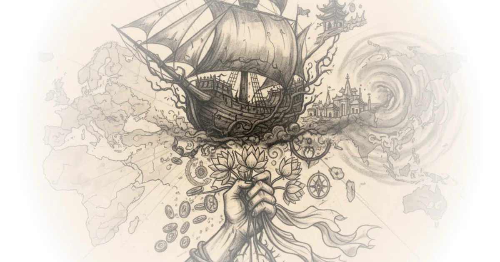

How Europe Colonized Asia - Pacific War #0.1 Documentary
Commentary by Brian Edwards
Transcript excerpt on Kings and Generals
once a land of ancient empires and legendary rulers asia saw itself turn into a colony of the expanding european powers in the early modern period drawn to the asian silk and spice trade their colonization efforts were initially directed to harness the continent's economic power eventually the european states started to use more and more force and by the start of the 20th century the eastern world would be almost entirely in the hands of colonial empires welcome to our quick rundown on european expansion in asia and the pacific this is a prelude video to our series on the pacific war we'll release weekly episodes with events that started 80 years prior don't forget to subscribe to never miss them we're going to talk about events that happened 80 years ago in this series but we are still in 2021 and in 2021 personal grooming and good hygiene are a must for a refined man and the sponsor of this video manscaped is here to help you with that if you've watched our channel for a while you'll know we're huge fans of manscaped and their performance package kit which is the world's first all-in-one men's grooming kit that makes trimming the hedges efficient and easy today we're excited to share that manscapes just released a new in-shower solution specifically designed for men the new ultra premium body wash the new body wash by manscaped is a premium daily shower gel centered with manscaped refined cologne and features a luxurious lather for any skin type infused with aloe vera and sea salt it gives the perfect balance of cleaning and hydration after you cleanse with the refined body wash grab your lawnmower 4.0 waterproof body trimmer and shave when your skin is soft and properly prepped for trimming be sure to opt in for the manscaped peak hygiene plan and get monthly or quarterly replenishments of your manscaped body wash without the hassle delivered straight to your door go to manscapes.com today and get 20 off plus free international shipping click the link in the description and join the manscaped movement today in 1492 the european discovery of the new world issued a new age of maritime exploration for the last century portuguese explorers had been already trying to bypass muslim territories to trade directly with west africa while also attempting to reach the indies and its lucrative ...